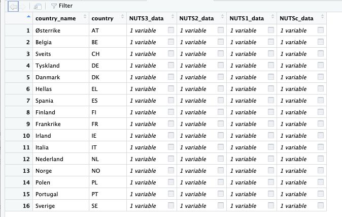
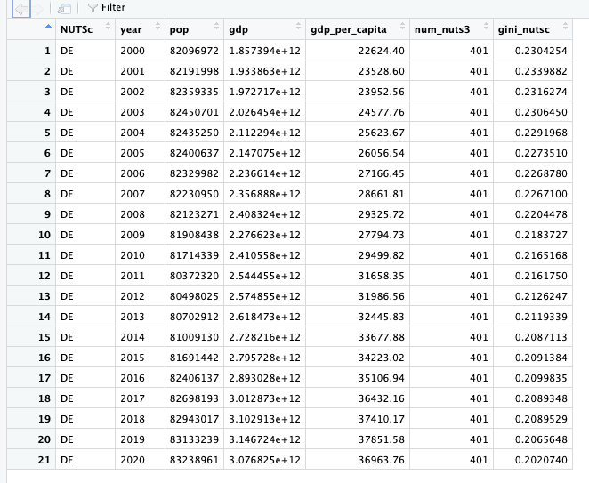
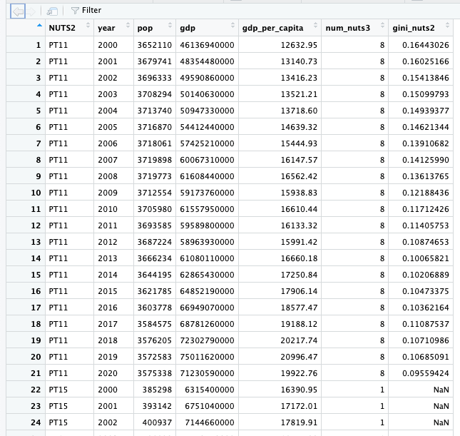
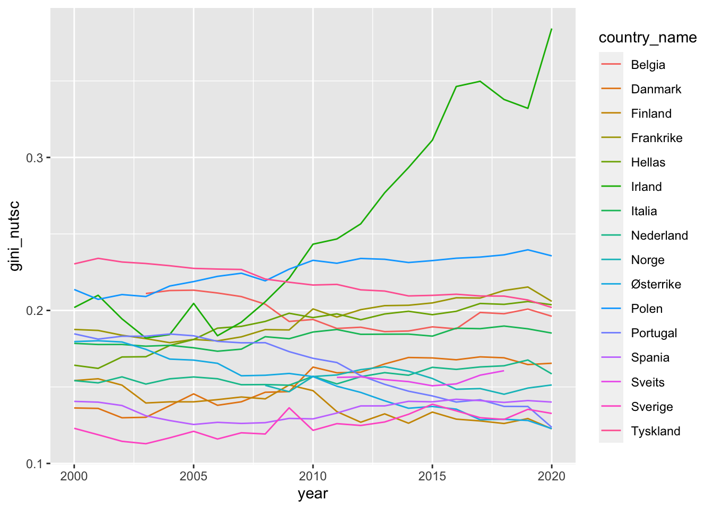
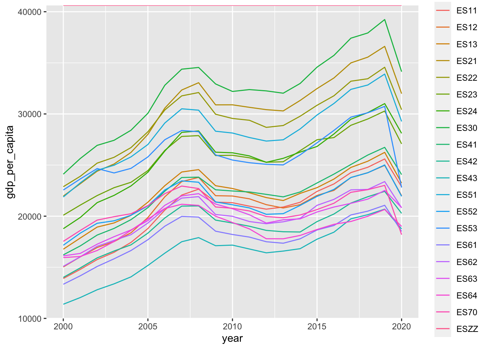
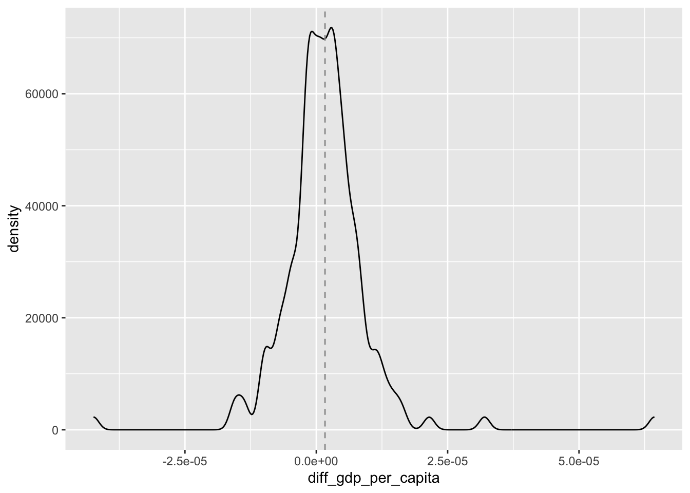

```{r}
#| label: setup
#| message: false
library(tidyverse)
library(readxl)
library(restatapi)
library(DescTools)
library(ggrepel)
library(flextable)
library(modelr)
library(plm)
library(broom)
library(sandwich)
```Assignment 4 2023 msb105
Denne oppgaven vil handle om å hente ned regionale data fra EU sin statistikk organisasjon [eurostat](https://ec.europa.eu/eurostat). Vi vil hente data direkte inn i R vha. en api. Dataene vil vi aggregere på ulike nivå fra NUTS3 (laveste nivå) opp via NUTS2 og NUTS1 til nasjons-nivå. Vi vil benytte Rs støtte via tidyverse for såkalte list-columns. Dette muliggjør «nested» data som vil si at vi kan ha en liste av tibbles som variabel i en tibble. Målet vårt er å ordne dataene som vist i Figur 1. Kolonnene NUTS3_data til NUTSc_data vil innholde data om brutto-nasjonalprodukt, befolkning, BNP per person og beregnet Gini-koeffisient for likhet/ulikhet mellom regioner mht. verdiskaping. Vi vil altså ha disse dataene på fire ulike aggregeringsnivå. Dataene vil dekken perioden 2000-2020.

Når dataene er hentet og organisert vil vi produsere ulike plots og også estimere noen enkle modeller.
Løsning av oppgaven vil benytte teknikker dekket i Many models slides og [r4ds ed. 1 chp. 25] (https://r4ds.had.co.nz/many-models.html). Videre vil vi benytte avbilding (mapping) av anonyme funksjoner på list-columns. Dette er dekket i r4ds ed. 1 chp. 21 og r4ds ed. 1 chp. 19. Pakkene jeg benyttet er listet i setup chunk-en.
HAPPY CODING 8-)
restatapi
Vi benytter pakken restatapi for å kommunisere med Eurostat. Vi vil benytte
get_eurostat_toc()for å hente innholdsfortegnelse og kode-navn for tabellene vi ønsker,get_eurostat_dsd()for å se hvilke variabler som finnes i tabellen og hvordan de er kodet ogget_eurostat_data()for å hente selve dataene.
Nedenfor vil jeg vise hvordan vi henter regionale GDP data for et utvalg land. Vi vil hente data på NUTS3 nivå (5 karakter kode) og aggregere opp til NUTS2 (4 karakter kode), NUTS1 (3 karakter kode) og NUTSc (nasjons) nivå (2 karakter kode). Dere vil hente to ulike datasett om befolkning på tilsvarende vis.
Toc. eurostat
Vi starter med å hente innholsfortegnelsen fra eurostat. Vi henter innholdsfortegnelsen i rent tekst format. Innholdsfortegnelsen gir vi navnet toc_txt.
# xml skal ha mer detaljert info
# toc_xml <- get_eurostat_toc()
# tekstversjonen har trolig nok info for vårt formål
toc_txt <- get_eurostat_toc(mode = "txt")GDP NUTS 3
Vi søker i toc_txt etter tabeller med GDP på nivå NUTS 3 vha. funksjonen str_detect(). Denne funksjonen skiller mellom store og små bokstaver. Siden vi ikke vet hvilken skrivemåte som er brukt for gdp og NUTS 3 benytter vi regex for å matche både små og store bokstaver. Vi benytter filter() for å finne de tabellene vi ønsker. Vi benytter select() for å velge ut kolonnene title og code som vi ønsker å se på. Vi benytter flextable() for å vise tabellen. Vi benytter til slutt autofit() for å tilpasse tabellen til siden. Detaljer om regex finner dere i Slides: Strings and regular expressions og i r4ds ed. 1 chp. 14.
Vi ønsker å finne tabellbeskrivelser som både inneholder gdp og nuts 3. Trikset for enkelt å få dette til er å ha AND (&) utenfor str_detect(). Det går an å få til en AND inne i en regexp, men dette kan fort bli kronglete og komplisert.
gdp_tabs <- toc_txt |>
# Regex AND external to regex
filter(
str_detect(
string = title,
# For å matche både små og store bokstaver
pattern = '[Gg][Dd][Pp]'
# AND vha. &
) &
str_detect(
string = title,
# For å matche både små og store bokstaver og
# space eller ikke før 3
pattern = '[Nn][Uu][Tt][Ss]\\s*3'
)
) |>
select(title, code)Vi finner fire tabeller listet i toc_txt.
gdp_tabs |>
select(title, code) |>
flextable() |>
width(1, width = 3.5) |>
width(2, width = 1.5)title | code |
|---|---|
Average annual population to calculate regional GDP data (thousand persons) by NUTS 3 regions | nama_10r_3popgdp |
Gross domestic product (GDP) at current market prices by NUTS 3 regions | nama_10r_3gdp |
European Union trade mark (EUTM) applications per billion GDP by NUTS 3 regions | ipr_ta_gdpr |
Community design (CD) applications per billion GDP by NUTS 3 regions | ipr_da_gdpr |
Vi velger å benytte tabellen med kode nama_10r_3gdp som har forklarende tekst «Gross domestic product (GDP) at current market prices by NUTS 3 regions». Vi henter «Data Structure Definition» for å finne hva som finnes i dette datasettet. Informasjonen benyttes for å definer «filters» for spørringen mot eurostat.
MERK! Merk bruken av nuts_level = “3” i filters for å få data på NUTS 3 nivå. Denne parameteren var ikke så lett å finne.
Vi laster så ned «Data Structure Definition (DSD)» for tabellen med code nama_10r_3gdp.
# description nama_10r_3gdp
dsd_gdp <- get_eurostat_dsd("nama_10r_3gdp")dsd_gdp |>
head(n = 15) |>
flextable() |>
width(1, width = 1) |>
width(2, width = 1) |>
width(3, width = 3.5)concept | code | name |
|---|---|---|
freq | A | Annual |
unit | MIO_EUR | Million euro |
unit | EUR_HAB | Euro per inhabitant |
unit | EUR_HAB_EU27_2020 | Euro per inhabitant in percentage of the EU27 (from 2020) average |
unit | MIO_NAC | Million units of national currency |
unit | MIO_PPS_EU27_2020 | Million purchasing power standards (PPS, EU27 from 2020) |
unit | PPS_EU27_2020_HAB | Purchasing power standard (PPS, EU27 from 2020), per inhabitant |
unit | PPS_HAB_EU27_2020 | Purchasing power standard (PPS, EU27 from 2020), per inhabitant in percentage of the EU27 (from 2020) average |
geo | EU27_2020 | European Union - 27 countries (from 2020) |
geo | BE | Belgium |
geo | BE1 | Région de Bruxelles-Capitale/Brussels Hoofdstedelijk Gewest |
geo | BE10 | Région de Bruxelles-Capitale/Brussels Hoofdstedelijk Gewest |
geo | BE100 | Arr. de Bruxelles-Capitale/Arr. Brussel-Hoofdstad |
geo | BE2 | Vlaams Gewest |
geo | BE21 | Prov. Antwerpen |
Utfra kodene i dsd_gdpkan vi da formulere følgende spørring mot Eurostat:
# Gross domestic product (GDP) at current market prices by NUTS 3 regions
# id: nama_10r_3gdp
nama_10r_3gdp <- get_eurostat_data(
id = "nama_10r_3gdp",
filters = list(
geo = c("AT", "DE", "DK", "FR", "EL", "ES",
"IT", "NL", "BE", "IE", "PL", "PT", "NO", "SE", "FI", "CH"),
nuts_level = "3",
unit = "MIO_PPS_EU27_2020"
),
exact_match = FALSE,
date_filter = 2000:2020,
stringsAsFactors = FALSE
) |>
mutate(
gdp = 1000000 * values
) |>
select(-c(unit, values)) |>
# Vil bare ha NUTS 3 nivå (5 karakterer). Vil aggregere selv til NUTS2,
# NUTS1 og NUTSc
filter(str_length(geo) == 5)Vi velger å benytte MIO_PPS_EU27_2020 som mål på GNP. Dette er GNP i løpende priser (million Euro). Det kunne vært aktuelt å benytte PPS_EU27_2020_HAB som skal være GNP målt i konstant kjøpekraft. Det synes imidlertid som om PPS_EU27_2020_HAB har urimelige/åpenbart feil verdier for en del regioner.
Population demo_r_pjanaggr3
Oppgave
- Søk i
toc_txtfor tabeller med population og NUTS 3. Pass på at dere dekker både population og Population og ulike skrivemåter for NUTS 3.
title | code |
|---|---|
Population density by NUTS 3 region | demo_r_d3dens |
Population on 1 January by age group, sex and NUTS 3 region | demo_r_pjangrp3 |
Population on 1 January by broad age group, sex and NUTS 3 region | demo_r_pjanaggr3 |
Population structure indicators by NUTS 3 region | demo_r_pjanind3 |
Population change - Demographic balance and crude rates at regional level (NUTS 3) | demo_r_gind3 |
Population by single year of age and NUTS 3 region | cens_11ag_r3 |
Population by marital status and NUTS 3 region | cens_11ms_r3 |
Population by family status and NUTS 3 region | cens_11fs_r3 |
Population by sex, citizenship and NUTS 3 regions | cens_01rsctz |
Population by sex, age group, current activity status and NUTS 3 regions | cens_01rapop |
Total and active population by sex, age, employment status, residence one year prior to the census and NUTS 3 regions | cens_01ramigr |
Population by sex, age group, educational attainment level, current activity status and NUTS 3 regions | cens_01rews |
Population by sex, age group, household status and NUTS 3 regions | cens_01rhtype |
Population by sex, age group, size of household and NUTS 3 regions | cens_01rhsize |
Average annual population to calculate regional GDP data (thousand persons) by NUTS 3 regions | nama_10r_3popgdp |
European Union trade mark (EUTM) applications per million population by NUTS 3 regions | ipr_ta_popr |
Community design (CD) applications per million population by NUTS 3 regions | ipr_da_popr |
Population with Ukrainian citizenship by 5-year age group and NUTS3 regions | cens_21ua_a5r3 |
Population with Ukrainian citizenship by age and NUTS 3 regions | cens_21ua_ar3 |
Population with Ukrainian citizenship by 5-year age group, marital status and NUTS3 regions | cens_21ua_msr3 |
Population by broad age group and NUTS 3 regions | cens_21agr3 |
Population on 1st January by age, sex, type of projection and NUTS 3 region | proj_19rp3 |
Vi vil i hovedsak bruke befolkningstabellen som har teksten: «Average annual population to calculate regional GDP data (thousand persons) by NUTS 3 regions», men siden denne synes å ha manglende data for noen regioner vil vi supplere med data fra tabellen med teksten «Population on 1 January by broad age group, sex and NUTS 3 region».
Oppgave
Finn koden for tabellen med forklarende tekst «Average annual population to calculate regional GDP data (thousand persons) by NUTS 3 regions».
Last ned Data Structure Definition (DSD) for denne tabellen.
Bruk opplysningene i DSD for å formulere en spørring mot Eurostat og last ned dataene. Gi dataene lastet ned samme navn som Eurostat sin kode for tabellen. Vi er bare interessert i totalbefolkning og ignorerer derfor både kjønn og alder. Vi ønsker data for årene 2000-2020.
Bruk
filter(str_length(geo) == 5)for å begrense datasettet til NUTS3 regioner. Vi vil gjøre vår egen aggregering.Hent data for landene:
c("AT", "DE", "DK", "FR", "EL","ES", "IT", "NL", "BE",
"IE", "PL", "PT", "NO", "SE", "FI", "CH")Alternative populasjonsdata
- Hent ned befolningsdata fra tabellen som har teksten «Population on 1 January by broad age group, sex and NUTS 3 region». Gi også her dataene samme navn som tabell-koden hos Eurostat. Igjen vil vi ikke skille på kjønn eller alder.
Bearbeiding av populasjonsdata
Vi vil ta utgangspunkt i populasjonsdata fra tabellen «Average annual population to calculate regional GDP data (thousand persons) by NUTS 3 regions» og supplere med data fra tabellen «Population on 1 January by broad age group, sex and NUTS 3 region» der data mangler.
Oppgave
- Bruk
setdiff()for å finne NUTS3 soner som inngår i «Average annual population to calculate regional GDP data (thousand persons) by NUTS 3 regions», men ikke i «Population on 1 January by broad age group, sex and NUTS 3 region».
[1] "DKZZZ" "ESZZZ" "ITG2D" "ITG2E" "ITG2F" "ITG2G" "ITG2H" "ITZZZ" "NLZZZ"
[10] "NO020" "NO074" "NO081" "NO082" "NO091" "NO092" "NO0A1" "NO0A2" "NO0A3"
[19] "NO0B2" "NOZZZ"Oppgave
- Bruk
setdiff()for å finne NUTS3 soner som inngår i «Population on 1 January by broad age group, sex and NUTS 3 region», men ikke i «Average annual population to calculate regional GDP data (thousand persons) by NUTS 3 regions».
[1] "BE221" "BE222" "BE321" "BE322" "BE324" "BE325" "BE326" "BE327" "FRXXX"
[10] "ITG25" "ITG26" "ITG27" "ITG28" "ITG29" "ITG2A" "ITG2B" "ITG2C" "NO011"
[19] "NO012" "NO021" "NO022" "NO031" "NO032" "NO033" "NO034" "NO041" "NO042"
[28] "NO043" "NO051" "NO052" "NO053" "NO061" "NO062" "NO072" "NO073"Oppgave
- Gjør en
full_join()av de to populasjonstabellene. Gi resultatet navnetfull_pop_nuts3.
Oppgave
- Bruk setdiff() for å sjekke sonene i full_pop_nuts3 mot dem vi har i GDP tabellen.
[1] "BE221" "BE222" "BE321" "BE322" "BE324" "BE325" "BE326" "BE327" "FRXXX"
[10] "ITG25" "ITG26" "ITG27" "ITG28" "ITG29" "ITG2A" "ITG2B" "ITG2C" "NO011"
[19] "NO012" "NO021" "NO022" "NO031" "NO032" "NO033" "NO034" "NO041" "NO042"
[28] "NO043" "NO051" "NO052" "NO053" "NO061" "NO062" "NO072" "NO073"Oppgave
- Bruk setdiff() for å sjekke sonene i GDP tabellen mot dem vi har i full_pop_nuts3.
[1] "ATZZZ" "BEZZZ" "FIZZZ" "FRZZZ" "PTZZZ" "SEZZZ"**ZZZ ser ut til å være en slags oppsamlingskategori i gdp-dataene. Vi har ikke tilsvarende for befolkning så disse har vi ingen bruk for.
Oppgave
- Fjern **ZZZ sonene fra
nama_10r_3gdp.
Følgende illustrerer problemet i full_pop_nuts3.
full_pop_nuts3 |>
filter(geo %in% c("NO053", "NO060", "NO061")) |>
filter(time %in% 2014:2020) |>
arrange(time, geo) geo time pop.x pop.y
1: NO053 2014 261458 NA
2: NO060 2014 441193 443090
3: NO061 2014 306067 NA
4: NO053 2015 263736 NA
5: NO060 2015 NA 447910
6: NO061 2015 310093 NA
7: NO053 2016 265151 NA
8: NO060 2016 449457 452090
9: NO061 2016 313105 NA
10: NO053 2017 266274 NA
11: NO060 2017 454596 457000
12: NO061 2017 317363 NA
13: NO053 2018 266858 NA
14: NO060 2018 458742 460170
15: NO061 2018 320884 NA
16: NO053 2019 267420 NA
17: NO060 2019 462032 465910
18: NO053 2020 267642 NA
19: NO060 2020 465136 469910Vi ønsker å benytte dataene fra «Average annual population to calculate regional GDP data (thousand persons) by NUTS 3 regions» (pop.x) der disse eksisterer og supplere med data fra «Population on 1 January by broad age group, sex and NUTS 3 region» (pop.y) der vi mangler data. Mangler vi data i begge tabellene setter vi verdien lik NA. (Hint! Sjekk ifelse())
Oppgave
- Lag en ny variabel pop i full_pop_nuts3 ut fra diskusjonen ovenfor. Dropp deretter variablene pop.x og pop.y.
full_pop_nuts3 <- full_pop_nuts3 |>
mutate(
pop = ifelse(
test = is.na(pop.x) == TRUE,
yes = pop.y,
no = pop.x
)
) |>
select(-pop.x, -pop.y)Har vi noen pop lik 0? Disse vil skape problemer når vi skal regne ut gdp_per_capita. En befolkning lik 0 betyr i denne sammenheng manglende data. Vi bør derfor rekode disse til NA hvis de finnes.
Oppgave
- Undersøk om vi har noen NUTS 3 soner med pop lik 0. Hvis det er noen så rekod disse til NA.
Vi har ovenfor sett at vi har et helt sett av NUTS3 regioner som finnes i befolkningsdata, men ikke i gdp datasettet. Vi kan ikke bruke disse, men fjerner dem lett vha. en left_join der x er gdp-data. Da legger vi bare til befolkningsdata for de sonene hvor vi har gdp-data.
Oppgave
- Utfør en left_join() der populasjonsdata blir lagt til datasettet som innholder GDP-data. Gi resultatet navnet
eu_data.
dim(eu_data)[1] 21159 4Sjekker hvor mange NUTS3 soner vi har i hvert land. Lager først en ny variabel country fra de to første karakterene i NUTS3
eu_data <- eu_data |>
mutate(
country = str_sub(geo, start = 1L, end = 2L)
)Sjekker så antall NUTS3
eu_data |>
distinct(geo, .keep_all = TRUE) |>
group_by(country) |>
summarise(Antall = n(), .groups = "drop")# A tibble: 16 × 2
country Antall
<chr> <int>
1 AT 35
2 BE 44
3 CH 26
4 DE 401
5 DK 12
6 EL 52
7 ES 60
8 FI 19
9 FR 101
10 IE 8
11 IT 108
12 NL 41
13 NO 13
14 PL 73
15 PT 25
16 SE 21Sjekker også summary for variablene i eu_data
eu_data |>
summary() geo time gdp pop
Length:21159 Length:21159 Min. :8.512e+07 Min. : 8400
Class :character Class :character 1st Qu.:2.944e+09 1st Qu.: 132899
Mode :character Mode :character Median :5.328e+09 Median : 241464
Mean :1.003e+10 Mean : 373445
3rd Qu.:1.035e+10 3rd Qu.: 441000
Max. :2.606e+11 Max. :6747068
NA's :110
country
Length:21159
Class :character
Mode :character
Endrer navn og rekkefølge på variabelen i eu_data vha. select().
eu_data <- eu_data |>
select(country, NUTS3 = geo, year = time, gdp, pop)# Rydder opp
# Sletter alle objekt utenom eu_data
# don't use if you don't mean it
rm(list = setdiff(ls(), "eu_data"))Nå skal vi ha orden i rådataene.
Oppgave
- Beregn
gdp_per_capitafor hver NUTS3 region for årene 2000-2020. Avrund til 2 desimaler.
Sjekker summary gdp_per_capita.
eu_data |>
select(gdp_per_capita) |>
summary() gdp_per_capita
Min. : 3359
1st Qu.: 18277
Median : 23258
Mean : 25291
3rd Qu.: 29392
Max. :177583
NA's :110 Vi ser at spennet er svært stort og at vi har 110 NAs.
Oppgave
- Bruk case_when() for å legge til variabelen
country_namefør vi går videre. Østerrike for AT, Belgia for BE etc..
Oppgave
- Lag de tre variablene NUTS2, NUTS1 og NUTSc fra NUTS3. Dette gjøres enklest vha. mutate() og str_sub(). Bruker også select() for å få variablene i rekkefølgen: country_name, country, year, NUTS3, NUTS2, NUTS1, NUTSc, gdp, pop, gdp_per_capita . NUTSc er vår egen «oppfinnelse» og angir land (to første karakterer i NUTS kode).
Beregning av Gini på NUTS2, NUTS1 og NUTSc nivå
Vi skal nå beregne Gini for hvert år på NUTS2, NUTS1 og NUTSc nivå. Vi vil beregne Gini utfra gdp_per_capita og pop i NUTS3 for alle aggregeringsnivåene. Alternativet hadde vært f.eks å bruke gdp_per_capita og pop på NUTS2 nivå for å regne ut Gini-koeffisient for NUTS1.
Gini-koeffisient er tradisjonelt et mål på inntektsforskjeller. Her benytter vi målet for å undersøke hvor jevnt verdiskapningen er fordelt mellom regioner. En Gini-koeffisient nær null vil altså her bety at verdiskapingen er jevnt fordelt mellom regionene i et land. En Gini-koeffisient nær 1 vil det derimot bety at det meste av verdiskapingen i et land er sentralisert til en spesifikk NUTS3 region.
Vi starter med NUTS2. Vi benytter funksjonen Gini() fra pakken DescTools for å beregne Gini-koeffisienter. Bruk populasjon som vekter. Funksjonen har et argument na.rm som det er viktig at vi husker å sette til TRUE. Regioner med NA verdi for gdp_per_capita vil da bli utelatt fra beregningen av Gini. Ellers vil vi etter vanlige R-regler få at Gini-koeffisienten er NA for disse.
Gini-koeffisient for NUTS2
Vi vil ha med pop og gdp som variabler. Disse vil være summen av de tilsvarende på NUTS3 nivå (det vi har i eu_data).
Oppgave
- Bruk koden nedenfor til å beregne Gini-koeffisienter på NUTS2 nivå. Beregn også
populasjonenoggdppå NUTS2 nivå. Bruk de to siste for å regne utgdp_per_capitafor hvert NUTS2 område. Finn også antall NUTS3 regioner som finnes i hver NUTS2 region. Gi denne variabelen navnetnum_nuts3. Det er viktig at dere beregner Gini-koeffisient før dere aggregerer populasjon og GDP. Resultatet legger dere i en tibble kaltgini_NUTS2.
gini_NUTS2 <- eu_data |>
group_by(NUTS2, country_name, country, year) |>
summarise(
gini_nuts2 = Gini(
x = gdp_per_capita,
weights = pop,
na.rm = TRUE
),
pop = sum(pop, na.rm = TRUE),
gdp = sum(gdp, na.rm = TRUE),
gdp_per_capita = gdp / pop,
num_nuts3 = n(),
.groups = "drop"
) |>
select(country_name, country, NUTS2, year, pop, gdp,
gdp_per_capita, num_nuts3, gini_nuts2)gini_NUTS2 |>
summary() |>
print(width = 80) country_name country NUTS2 year
Length:4290 Length:4290 Length:4290 Length:4290
Class :character Class :character Class :character Class :character
Mode :character Mode :character Mode :character Mode :character
pop gdp gdp_per_capita num_nuts3
Min. : 0 Min. :8.512e+07 Min. : 3359 Min. : 1.000
1st Qu.: 649949 1st Qu.:1.538e+10 1st Qu.:19577 1st Qu.: 2.000
Median : 1407164 Median :3.352e+10 Median :24781 Median : 4.000
Mean : 1832319 Mean :4.946e+10 Mean : Inf Mean : 4.932
3rd Qu.: 2349792 3rd Qu.:6.179e+10 3rd Qu.:31435 3rd Qu.: 6.000
Max. :12291557 Max. :6.996e+11 Max. : Inf Max. :23.000
gini_nuts2
Min. :0.0000
1st Qu.:0.0596
Median :0.1016
Mean :0.1197
3rd Qu.:0.1603
Max. :0.4550
NA's :800 Vi ser at vi har et spenn i Gini-koeffisienten på NUTS2 nivå fra 0.00 til 0.45. Vi har også 800 NAs som stammer fra de 110 NA-ene vi har i pop. Vi ser også at antall NUTS3 i NUTS2 regioner spenner fra 1 til 23.
Sjekker obs. med Gini avrundet til 0,0000.
gini_NUTS2 |>
select(-country_name) |>
filter(gini_nuts2 < 0.001)# A tibble: 5 × 8
country NUTS2 year pop gdp gdp_per_capita num_nuts3 gini_nuts2
<chr> <chr> <chr> <dbl> <dbl> <dbl> <int> <dbl>
1 AT AT34 2002 352574 9450050000 26803. 2 0.000358
2 ES ES43 2001 1059011 12749280000 12039. 2 0.000917
3 ES ES43 2006 1074937 17609920000 16382. 2 0.000850
4 IT ITF5 2006 589480 11135870000 18891. 2 0.0000135
5 PL PL43 2011 1010700 14215740000 14065. 2 0.000745 Vi ser at NUTS2 regioner med svært lave Gini-koeffisient består av bare to NUTS3 regioner. Generelt kan Gini-koeffisient fort bli misvisende nå vi har få observasjoner i en gruppe.
Oppgave
- Beregn Gini-koeffisienter på NUTS1 nivå. Legg reultatet i
gini_NUTS1.
gini_NUTS1 |>
summary() |>
print(width = 80) country_name country NUTS1 year
Length:1642 Length:1642 Length:1642 Length:1642
Class :character Class :character Class :character Class :character
Mode :character Mode :character Mode :character Mode :character
pop gdp gdp_per_capita num_nuts3
Min. : 0 Min. :5.875e+08 Min. : 6423 Min. : 1.00
1st Qu.: 2170844 1st Qu.:4.824e+10 1st Qu.:20152 1st Qu.: 6.00
Median : 3870896 Median :9.477e+10 Median :25534 Median : 9.00
Mean : 4787239 Mean :1.292e+11 Mean : Inf Mean :12.89
3rd Qu.: 6005644 3rd Qu.:1.587e+11 3rd Qu.:32744 3rd Qu.:16.00
Max. :18064692 Max. :6.996e+11 Max. : Inf Max. :96.00
gini_nuts1
Min. :0.02050
1st Qu.:0.08408
Median :0.12641
Mean :0.13403
3rd Qu.:0.16808
Max. :0.39117
NA's :241 Ser at vi har et spenn i Gini-koeffisienten på NUTS1 nivå fra 0.02 til 0.39. Antall NAs er nå 241. Vi ser at antall NUTS3 i NUTS1 regioner spenner helt fra 1 til 96.
Oppgave
- Beregn Gini-koeffisienter på nasjonsnivå. Legg resultatet i
gini_NUTSc.
gini_NUTSc |>
summary() |>
print(width = 80) country_name country NUTSc year
Length:312 Length:312 Length:312 Length:312
Class :character Class :character Class :character Class :character
Mode :character Mode :character Mode :character Mode :character
pop gdp gdp_per_capita num_nuts3
Min. : 3525494 Min. :9.547e+10 Min. : 8859 Min. : 6.00
1st Qu.: 7995331 1st Qu.:2.106e+11 1st Qu.:23521 1st Qu.: 21.00
Median :10558176 Median :3.121e+11 Median :28395 Median : 41.00
Mean :25194380 Mean :6.801e+11 Mean :29167 Mean : 67.82
3rd Qu.:43474746 3rd Qu.:1.011e+12 3rd Qu.:34340 3rd Qu.: 73.00
Max. :83166711 Max. :3.147e+12 Max. :61796 Max. :401.00
gini_nutsc
Min. :0.1129
1st Qu.:0.1440
Median :0.1696
Mean :0.1760
3rd Qu.:0.2006
Max. :0.3843 «Nestete» datastrukturer
Vi vil nå «neste» de ulike gini_NUTS* datasettene og sette dem sammen til et nestet datasett eu_data_nestet som innholder alle dataene ovenfor i en fint ordnet struktur.
Oppgave
- Bruk koden nedenfor til å «neste» dataene på NUTS2 nivå.
gini_NUTS2_nest <- gini_NUTS2 |>
group_by(country_name, country) |>
nest(.key = "NUTS2_data") |>
ungroup()Oppgave
- «Nest» dataene på NUTS1 nivå. Legg resultatet
gini_NUTS1_nest.
Oppgave
- «Nest» dataene på nasjonsnivå. Legg resultatet i
gini_NUTSc_nest.
Oppgave
- Nest dataene på NUTS3 nivå (legg resultatet i en list-column kalt
NUTS3_data) og brukleft_join()til å legge til datasettenegini_NUTS2_nest,gini_NUTS1_nestoggini_NUTSc_nest. Det kan være lurt å benytte enungroup()etter at en har «nestet» NUTS3_data for å fjerne gruppestrukturen som vi ikke har bruk for videre.
Når en er sikker på at alt er på plass kan en benytte følgende for å slette alle objekter utenom eu_data og eu_data_nested.
# don't run if you don't mean it.
rm(list = setdiff(ls(), c("eu_data", "eu_data_nested")))Resultatet
Da skal vi ha et datasett eu_data_nested som ser slik ut.
Klikker vi f.eks på det firkatete ikonet for Tyskland i NUTSc_data kolonnen får vi opp følgende:

Går vi inn i NUTS2 kolonnen for Portugal får vi opp følgende:

Plots som viser utviklingen
Oppgave
- Lag et lineplot i ggplot som viser utviklingen i Gini-koeffisient på nasjonsnivå for de 16 landene vi har med. Husk argumentet
group =. Resulatet skal bli som vist i Figur 2.

Sortert tabell for Gini i år 2020 som gjør det litt lettere å se hvilken linje som hører til hvilket land.
eu_data_nested |>
unnest(NUTSc_data) |>
filter(year == 2020) |>
select(country_name, gini_nutsc) |>
arrange(desc(gini_nutsc)) |>
flextable() |>
width(1, width = 1.5) |>
width(2, width = 1.5)country_name | gini_nutsc |
|---|---|
Irland | 0.3842526 |
Polen | 0.2356700 |
Frankrike | 0.2059513 |
Hellas | 0.2037289 |
Tyskland | 0.2019286 |
Belgia | 0.1961939 |
Italia | 0.1852001 |
Danmark | 0.1654875 |
Nederland | 0.1585346 |
Norge | 0.1513034 |
Spania | 0.1401269 |
Sverige | 0.1326921 |
Portugal | 0.1236290 |
Østerrike | 0.1227349 |
Finland | 0.1226160 |
Oppgave
- Hva er det som skjer i Irland? Se nærmere på utvikling i gnp_per_capita og Gini-koeffisient for de ulike NUTS2 sonene i Irland.
country_name | gdp_per_capita |
|---|---|
Irland | 61,796.07 |
Norge | 42,692.78 |
Danmark | 39,906.58 |
Nederland | 39,262.96 |
Østerrike | 37,559.46 |
Tyskland | 36,995.87 |
Sverige | 36,859.16 |
Belgia | 35,773.83 |
Finland | 34,276.50 |
Frankrike | 31,634.78 |
Italia | 28,163.70 |
Spania | 24,901.11 |
Polen | 23,097.21 |
Portugal | 22,882.78 |
Hellas | 18,579.30 |
Ser nærmere på NUTS2 sonene i Irland.
Utvikling i gnp_per_capita for NUTS2 sonene i Irland.
Har Irland funnet ut hvordan man lager gull av torv? Nei!
For en forklaring av Irlands spesielle kurver se f.eks følgende side. Kort fortalt var årsaken at Apple Inc. restrukturerte sitt skatteopplegg.
Hvordan er verdiskapningen fordelt mellom regionene i ulike land?
Spania
Spania hadde i år 2020 en Gini-koeffisient lik 0,14 som skulle tilsi en nokså jevn fordeling av økonomisk aktivitet mellom regionene.
Oppgave
- Lag et line-plot som viser utviklingen i Gini-koeffisientene for NUTS2 regionene i Spania.
Oppgave
- Gjør tilsvarende for NUTS1 regionene i Spania.
Oppgave
- Hva kan vi ut fra figurene ovenfor generelt si om fordelingen av den økonomiske aktiviteten mellom regionene i Spania?
Oppgave
- Lag et line-plot (plottet vist i Figur 3) som viser utviklingen i gdp_per_capita (nominelle verdier) for de ulike NUTS2 regionene i Spania. Hva er det vi ser effekten av til høyre i Figur 3?

Tyskland
Tyskland hadde i år 2020 en Gini-koeffisient lik 0,20 som skulle tilsi en nokså jevn fordeling av økonomisk aktivitet mellom regionene. Tyskland ligger likevel relativt høyt blandt landene vi har i vårt utvalg. Dette skulle indikere større spredning mellom regionene i Tyskland.
Oppgave
- Lag et line-plot som viser utviklingen i Gini-koeffisient for NUTS2 regionene i Tyskland.
Ser at Gini-koeffisientene spnner fra ca. 0.03 til over 0.45. Det ser altså ut til å være store forskjeller mellom NUTS2 regionene i Tyskland. Noen NUTS2 soner ser ut til å være relativt ensartet mhp. verdiskapning, mens andre er preget av store forskjeller mellom NUTS3 regionene.
Oppgave
- Sjekk om det samme er tilfelle når vi ser på de større regioner (NUTS1)
Frankrike
Frankrike hadde i år 2020 en Gini-koeffisient lik 0,206 som også skulle tilsi en nokså jevn fordeling av økonomisk aktivitet mellom regionene. Frankrike ligger imidlertid høyt blandt landene vi har i vårt utvalg.
Oppgave
- Vis utviklingen i Gini-koeffisient for NUTS2 regionene i Frankrike i et line-plot.
Tabell 4 viser Gini-koeffisientene for franske NUTS2 regioner i 2020.
eu_data_nested |>
unnest(NUTS2_data) |>
filter(country_name == "Frankrike") |>
filter(year == 2020) |>
select(NUTS2, gini_nuts2) |>
arrange(desc(gini_nuts2)) |>
flextable() |>
width(1, width = 1.5) |>
width(2, width = 1.5)NUTS2 | gini_nuts2 |
|---|---|
FR10 | 0.33372167 |
FRJ2 | 0.16991361 |
FRK2 | 0.15555695 |
FRE1 | 0.12387711 |
FRF2 | 0.12232861 |
FRM0 | 0.12162313 |
FRI1 | 0.11044724 |
FRK1 | 0.11005315 |
FRD2 | 0.10996150 |
FRC1 | 0.10618013 |
FRL0 | 0.09979287 |
FRG0 | 0.08927537 |
FRF1 | 0.08902392 |
FRI2 | 0.08564888 |
FRH0 | 0.08486199 |
FRJ1 | 0.08255822 |
FRC2 | 0.07309848 |
FRB0 | 0.06609860 |
FRD1 | 0.06139470 |
FRE2 | 0.05704887 |
FRI3 | 0.04934762 |
FRF3 | 0.04375464 |
FRY1 | |
FRY2 | |
FRY3 | |
FRY4 | |
FRY5 |
Oppgave
- Vis utviklingen i Gini-koeffisient for NUTS1 regionene i Frankrike i et line-plot.
Oppgave
- Vi ser at for Frankrike er det en region (FR1) som har klart større forskjeller mht. verdistgning enn de andre. Sjekk denne regionen nærmere.
Oppgave
- Vis utviklingen i
gdp_per_capitafor NUTS3 sonene i FR1.
Oppgave
- Hva ser ut til å være årsaken til den høye Gini-koeffisienten for FR1?
Enkle modeller
Vi har brukt nominelle verdier for GNP. Vil vi undersøke om det er noen sammenheng mellom GDP og Gini-koeffisienten bør vi se på endringen i de to variablene.
Er det slik at høyrere verdiskapning (velstand) medfører større utjevning mellom regionene? Vi vil bruke en enkel modell diff_gini_nuts2 ~ diff_gdp_per_capita. Finner vi en signifikant positiv koeffisient for diff_gdp_per_capita indikerer dette økt utgjevning mellom regionene når gdp_per_capita (velstandsnivå) øker.
Vi gjør først en «data science» studie, der vi beregner en regresjonsmodellen for hver av de 173 NUTS2 regionene vi har. Fra disse 173 modellene plukker vi så ut koeffisienten for diff_gdp_per_capita. Vi lager så et «denisity plot» for disse og genererer også diverse beskrivende statistikk.
Til slutt bruker vi dataene for å utføre en kanksje mer korrekt analyse der vi utnytter panel-strukturen i dataene og estimerer en «fixed effect» modell.
«Data Science» modeller
Oppgave
- Lag datasett for endringer i
gdp_per_capitaoggini_nuts2. Bruk gjerne koden nedenfor,
NUTS2_diff <- eu_data_nested |>
unnest(NUTS2_data) |>
mutate(
# Når vi tar diff får vi en obs. mindre. Legger derfor inn en NA først
# i vektoren
diff_gdp_per_capita = c(NA, diff(gdp_per_capita)),
diff_gini_nuts2 = c(NA, diff(gini_nuts2))
) |>
select(country_name, country, NUTS2, year, diff_gdp_per_capita, diff_gini_nuts2) %>%
# Fjerner obs. der vi har NA
filter(complete.cases(.)) |>
group_by(country_name, country, NUTS2) |>
nest(.key = "NUTS2_diff")Oppgave
- Bruk modellen
diff_gini_nuts2 ~ diff_gdp_per_capitapå hver av de 173 NUTS3 regionene vha. en anonym funksjon som «mappes» på «list-column»NUTS2_diff. Legg resultatet i en variabelmodell.
- Hent ut koeffisientene fra de 173 modellene og legg resultatet i variabelen mod_coeff. Gjør dette ved å «mappe» funksjonen coeff() på list_column modell. (Hint: Husk at hvis vi ønsker en dataframe så må
_dfvarianten av map.)
NUTS2_diff <- NUTS2_diff |>
group_by(country_name, country, NUTS2) |>
mutate(
mod_coeff = map_df(
.x = modell,
.f = coef
)
)- Brukk glance() funksjonen fra broom pakken og «map» denne på modell variabelen for å generere «model summary». Legg reultatet i en variabel mod_sum.
NUTS2_diff <- NUTS2_diff |>
group_by(country_name, country, NUTS2) |>
mutate(
mod_sum = map_df(
.x = modell,
.f = glance
)
)- Bruk
ggplottil å lage et «density plot» av til variabelendiff_gdp_per_capita. Legg inn en vertikal linje for gjennomsnittdiff_gdp_per_capita. (Hint! Husk argumentet na.rm = TRUE.)
NUTS2_diff$mod_coeff |>
ggplot() +
geom_density(mapping = aes(x = diff_gdp_per_capita), adjust = 0.6) +
geom_vline(mapping = aes(xintercept = mean(diff_gdp_per_capita, na.rm = TRUE)),
colour = "gray60",
linetype = "dashed")
- Hvor mange av de 173 regrersjonskoeffisientene for
diff_gdp_per_capitaer positive?
- Finn mean av de 173 koeffisientene beregnet for
diff_gdp_per_capita.
- Utfør en enkel t-test for å teste om diff_gdp_per_capita er signifikant størr enn 0.
Panel modell
- Bruk funksjonen
plm()fra pakkenplmtil å utføre en panel-regresjon på dataene. For argumentet index kan dere brukeindex = c("NUTS2", "year"). Bruk samme enkle modell som ovenfor dvs.diff_gini_nuts2 ~ diff_gdp_per_capita. Putt resultatet av regresjonen i et objektp_mod.
Adding missing grouping variables: `country_name`, `country`- Vis
summary()forp_modog tolk resultatet.
- En alternativ måte å finne
summary()for p_mod er gjengitt i chunk-en nedenfor. Forklar hva som blir gjort her og sammenlign med resultatet av en ordinærsummary().
summary(p_mod, vcov = function(x) vcovHC(x, method = "white2"))Oneway (individual) effect Within Model
Note: Coefficient variance-covariance matrix supplied: function(x) vcovHC(x, method = "white2")
Call:
plm(formula = "diff_gini_nuts2 ~ diff_gdp_per_capita", data = .,
index = c("NUTS2", "year"))
Unbalanced Panel: n = 173, T = 7-21, N = 3463
Residuals:
Min. 1st Qu. Median 3rd Qu. Max.
-0.26413335 -0.00648699 -0.00072962 0.00489415 0.28188009
Coefficients:
Estimate Std. Error t-value Pr(>|t|)
diff_gdp_per_capita 3.0332e-06 1.6149e-07 18.782 < 2.2e-16 ***
---
Signif. codes: 0 '***' 0.001 '**' 0.01 '*' 0.05 '.' 0.1 ' ' 1
Total Sum of Squares: 1.9619
Residual Sum of Squares: 1.6875
R-Squared: 0.13986
Adj. R-Squared: 0.094622
F-statistic: 352.761 on 1 and 172 DF, p-value: < 2.22e-16